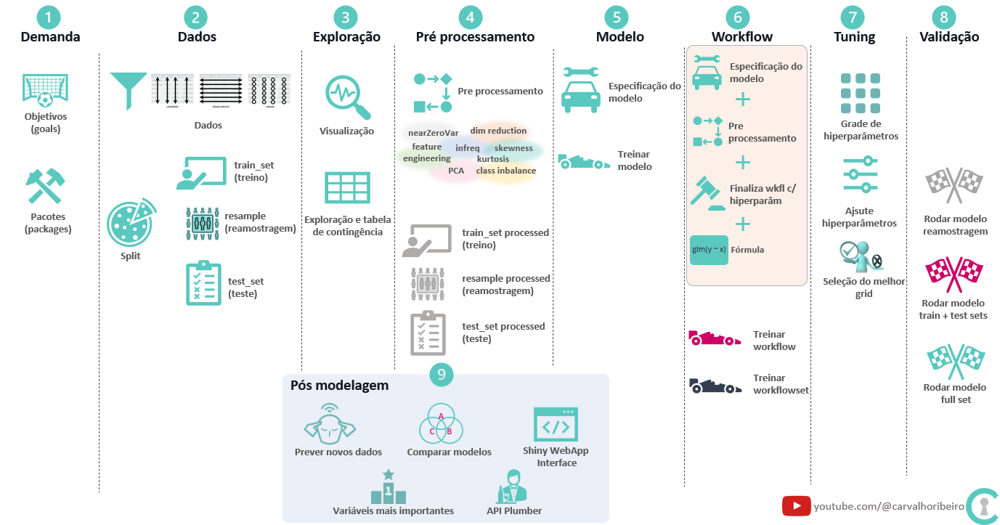

Packages
# packages ---------------------------------------------------------------
library(tidyverse)
library(tidymodels)Modelo machine learning de árvore de decisão usando rpart, tidymodels e dados de diabetes
Marcelo Carvalho dos Anjos
November 28, 2022
Vídeo tema para este post em Tidymodels decision tree model diabetes - rpart
Pacotes
Para reproduzir os códigos abaixo serão necessários os pacotes tidyverse , tidymodels e janitor
Dados
O conjunto de dados é o Pima Indians Diabetes Database disponível na Universidade da California Irvine Machine Learning Repository, no kaggle e também no pacote mlbench no R.
Pima US são povos indígenas, e hoje vivem principalmente em três reservas no Arizona: A Reserva do Rio Gila, A Reserva do Rio Salgado, A Reserva Ak-Chin
Os índios Pima do Arizona são estudados por mais de 30 anos e intrigam os pesquisadores porque sofrem de uma das taxas mais altas de diabetes do mundo.
Entre os índios Pima mexicanos, 5,6% dos homens e 8,5% das mulheres tinham diabetes, enquanto nos índios Pima do US 34,2% dos homens e 40,8% das mulheres tinham a doença (P < 0,01) prevalências significativamente maior nos americanos.
Cerca de metade dos Pimas do Arizona com 40 anos ou mais tem diabetes de início adulto, uma condição na qual a insulina é produzida em quantidades insuficientes para atender às necessidades do corpo.
Estão severamente acima do peso sendo os jovens estão acima da média nos EUA onde 1 a cada 4 são considerados obesos.
Outro problema no grupo e insuficiência renal decorrente do diabetes sendo que 60% dos Pimas do Arizona desenvolvem doença renal relacionada ao diabetes contra 30% da população americana.
Expectativa de vida dos Pima é muito menor do que a média nacional 72/M 78/F. Nos Pima 53/M e 63/F
Fluxo de trabalho

Código reproduzível
Hyperparameter tune
# grid spec ---------------------------------------------------------------
grid_pima <-
grid_regular(cost_complexity(),
tree_depth(),
min_n(),
levels = 3)
# tune grid ---------------------------------------------------------------
doParallel::registerDoParallel()
set.seed(123)
tune_grid_rpart_pima <-
tune_grid(wkfl_rpart_pima,
resamples = resample_pima,
grid = grid_pima,
metrics = metric_set(roc_auc,accuracy),
control = control_grid(save_pred = TRUE))
best_grid_rpart_pima <- tune_grid_rpart_pima %>% select_best(metric= "roc_auc")
#final wkfl
final_wkfl_rpart_pima <-
finalize_workflow(wkfl_rpart_pima, best_grid_rpart_pima)Aperfeiçoamento das técnicas de construção de modelos usando tidymodels.
Criação de modelo de previsão que pode ser melhorado e aproveitado projetos futuros.
Estimular a geração de ideias, dúvidas e conhecimento acerca do problema e também na construção de modelos de previsão.